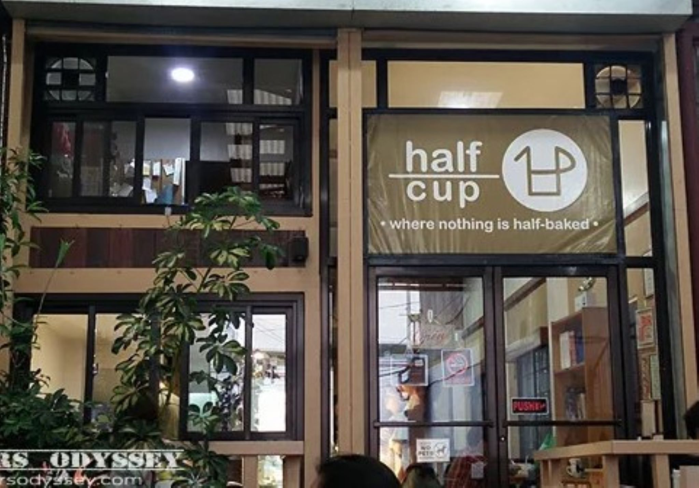
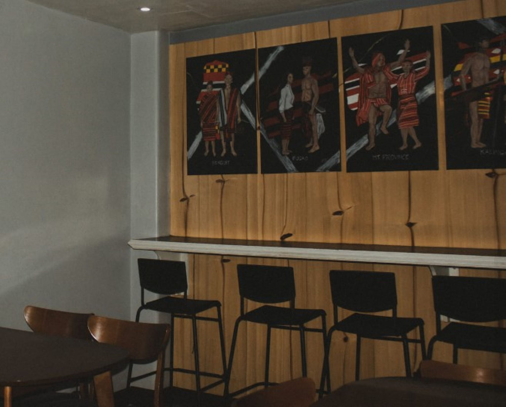

Kai Cafe in La Trinidad, Benguet, is a friendly place that shows off the great things about the area. It's a cozy spot where people can relax, enjoy yummy treats, and experience the special vibe of the Benguet highlands.
Want to have some coffee?
Cafes

Kai Cafe

Sinner or Saint Cafe

Fiika Cafe
Half Cup Cafe

Focus Cafe

Labz Cafe
Mithi Cafe

Collective Cafe
Kai Cafe
Sinner or Saint Cafe
Sinner or Saint Cafe is a vibrant and eclectic coffeehouse that caters to diverse tastes, offering a unique blend of sinful indulgences and heavenly delights. Nestled in a cozy ambiance, patrons can enjoy a range of expertly crafted coffees and delectable treats.
Fiika Cafe
Fiika Cafe in La Trinidad, Benguet, is a welcoming spot where you can enjoy a relaxed coffee experience. With a cozy setting and a menu featuring delightful coffee blends and tasty treats, Fiika provides a friendly space for locals and visitors alike to connect, unwind, and savor the simple pleasures of life in the Benguet highlands.
Half Cup Cafe
Half Cup Cafe is a cozy spot that brings people together over good coffee and delicious bites. With a warm atmosphere and a menu featuring comforting treats, it's the perfect place to unwind and enjoy a half cup of joy in the heart of the community
Focus Cafe (Focus Work & Study Friendly Cafe)
Step into Focus Cafe, a cozy haven where the aroma of freshly ground coffee mingles with the soft hum of focused conversations. With its minimalist decor and warm, dim lighting, this tranquil spot invites patrons to savor a carefully curated selection of brews while immersing themselves in a serene atmosphere conducive to productivity and creativity.
Labz Cafe
Welcome to Labz Cafe, where the art of coffee meets the spirit of innovation. With its sleek, modern design and a menu that blends exotic flavors with scientific flair, this avant-garde establishment invites patrons to experiment with their taste buds while surrounded by an atmosphere that sparks curiosity and collaboration.
Mithi Cafe
Indulge your senses at Mithi Cafe, a sweet escape where the air is infused with the enchanting aroma of freshly baked pastries and delicate confections. Nestled in a corner of blissful simplicity, this charming haven offers a delightful menu of desserts that transport patrons to a world of sugary delights, creating moments of joy with each heavenly bite.
Collective Cafe
Step into Collective Cafe, where the essence of community is brewed into every cup. With its inviting communal tables, vibrant artwork, and a menu that celebrates diverse flavors, this cozy spot encourages patrons to come together, share ideas, and savor the rich blend of connections made over aromatic coffees and hearty meals.